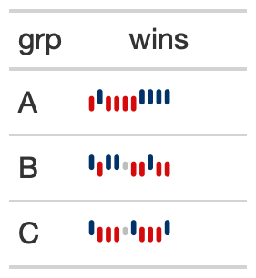

The gt_plt_winloss function takes an existing gt_tbl object and
adds squares of a specific color and vertical position based on wins/losses.
It is a wrapper around gt::text_transform(). The column chosen must be
a list-column as seen in the example code. The column should also only contain
values of 0 (loss), 0.5 (tie), and 1 (win).
gt_plt_winloss(
gt_object,
column,
max_wins = 17,
colors = c("#013369", "#D50A0A", "gray"),
type = "pill",
width = 23
)| gt_object | An existing gt table object of class |
|---|---|
| column | The column wherein the winloss plot should replace existing data. Note that the data must be represented as a list of numeric values ahead of time. |
| max_wins | An integer indicating the max possible wins, this will be used to add padding if the total wins/losses observed is less than the max. This is useful for mid-season reporting. Defaults to a red, blue, grey palette. |
| colors | A character vector of length 3, specifying the colors for win, loss, tie in that exact order. |
| type | A character string representing the type of plot, either a 'pill' or 'square' |
| width | A numeric indicating the width of the plot in |
An object of class gt_tbl.

3-1
Other Plotting:
gt_plt_bar_pct(),
gt_plt_bar_stack(),
gt_plt_bar(),
gt_plt_percentile(),
gt_plt_point(),
gt_sparkline()
library(gt)
set.seed(37)
data_in <- dplyr::tibble(
grp = rep(c("A", "B", "C"), each = 10),
wins = sample(c(0,1,.5), size = 30, prob = c(0.45, 0.45, 0.1), replace = TRUE)
) %>%
dplyr::group_by(grp) %>%
dplyr::summarize(wins=list(wins), .groups = "drop")
data_in
#> # A tibble: 3 × 2
#> grp wins
#> <chr> <list>
#> 1 A <dbl [10]>
#> 2 B <dbl [10]>
#> 3 C <dbl [10]>
win_table <- data_in %>%
gt() %>%
gt_plt_winloss(wins)